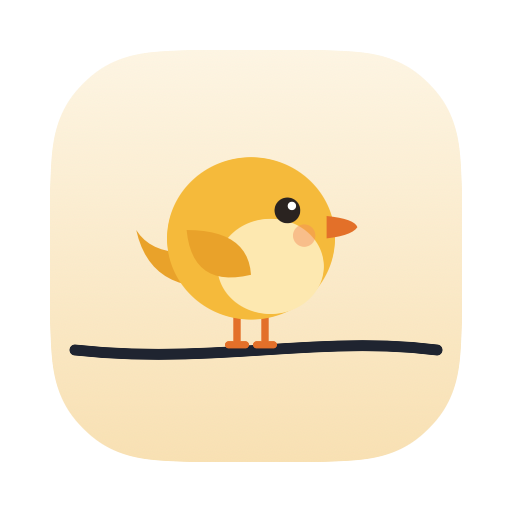

Writing help that never leaves your Mac.
Dictate, record meetings, check your writing, listen to pages and get summaries. Chirp runs open models on your Mac, so what you say and write stays there.
Hi Sam, thanks for the notes from Tuesday.
Friday at ten works for me.
I’ll bring the floor plans.
 0:00
0:001
2
3
4
5
6
7
8
One small bar for all of it.
The perch sits at the edge of your screen, over any app. Click the bird or press a key.
Dictatehold ⌥Note⌥NRead⌥LFix⌥ISummarize⌥UDictate
Dictate into any app.
Hold the right Option key and talk. Let go, and your words appear where the cursor is, with punctuation.
- Works in any text field
- Add names and terms to your dictionary
- Hands-free with ⌥ Space
Kitchen plan
Order the tiles by Thursday.
Ask Dana if the oven fits the space
next to the window.
0:001
2
3
4
5
6
7
8
Meetings and voice notes
Record meetings and voice notes.
See a live transcript while people talk, type notes beside it, and get a summary when it ends.
- Your microphone and the call’s audio
- Each speaker labelled
- Voice notes become text you can edit
You11:58Can we move the launch to the second week of May?
Priya12:01That works if the copy is finished by Friday.
Marco12:03I can take the copy. I’ll share a draft on Wednesday.
Your notes
Launch: second week of May12:02
Marco drafts the copy12:03
Meeting12:04NotesWriting checks
Catch mistakes as you type.
Spelling, grammar and style are underlined in the apps you already write in. Fix one with a click, or rephrase a sentence.
- recieveSpelling
- the theGrammar
- in a timely mannerStyle
- Nothing changes until you click Fix
- Rephrase a whole sentence when you want to
3recieve → receive
A common misspelling.
Read aloud
Listen instead of reading.
Select text, open a page or drop a PDF on the perch, and Chirp reads it in a natural voice.
- Choose the voice and the speed
- Skip back or ahead a sentence
- Teach it how to say a name
Starting a balcony garden
Start with three pots and plants that like the light you have. Herbs do well with four hours of sun a day. Water in the morning, and check the soil with a finger first.
2:141×Summarize
Get the short version.
Summarize a long page, a PDF or an email thread. The main points come first, and the original is one click away.
Before · 12 pages
Community garden plan
After · the main points
SummaryGarden plan.pdf- Planting starts in March, in beds 1 to 12.
- Each household gets one bed and waters it twice a week.
- Tools stay in the shed. The lock code changes each month.
- The next meeting is on 4 April.
Summary ready- Pages, PDFs and emails
- Long documents, part by part
- Read the summary aloud
Notes and search
Find it by what it meant.
Dictations, meetings, notes and documents all go to one library. Search by meaning, so “the budget call” finds the meeting about costs.
- Notes written in Markdown
- Export as .md, .txt or .rtf
- Pin items and sort them into folders
…we went through the costs for the spring launch and what we can cut…
Voice note9 NovAsk about the venue budget before Friday.
Spring launch plan.pdfDocument · 14 pagesSection 4: spending by month.
Also in Chirp.
The smaller things you reach for every day.
Snippets
Say a short phrase and Chirp types the whole thing: an address, a sign-off, a link.
Your dictionary
Teach it names and terms once. Dictation and spelling both use them.
Say it as
Fix how a name is read aloud, and it stays fixed.
Files and links
Drop a PDF, an audio file or a link on the perch to read, summarize or transcribe it.
The menu bar
Every action and setting, one click away.
Everything stays on your Mac.
Chirp has no account and no server of its own. The speech, language and voice models run on your Mac, and your recordings, notes and documents are saved there.
No account
Download it and start. There is nothing to sign up for.
Nothing uploaded
Your voice and your writing are never sent anywhere. Not to process them, not to train on them.
Open source
The code is public under GPL-3.0, so anyone can check what it does.
Chirp goes online only to download its models, to check for updates, and to fetch a link or page you give it.

Get Chirp.
Free, with updates built in. To get new features early, download a beta, or turn on Get beta versions in Settings.
What you need
- Mac with Apple SiliconM1 or later
- macOS 26 or later
- 8 GB of memory works16 GB is comfortable; with 8 GB the models take turns
- About 3 to 5 GB free for the modelsEach downloads the first time a feature needs it
- English
Questions
Something else? Ask on GitHub Discussions.
Is Chirp free?
Yes. It is free and open source under the GPL-3.0 licence.
Does anything I say or write leave my Mac?
No. Dictation, meetings, writing checks, reading and summaries all run on your Mac. Chirp goes online only to download its models, to check for updates, and to fetch a link or web page you ask it to read or transcribe. Every request is listed in the privacy notes on GitHub.
macOS says it can’t open Chirp
This first version isn’t notarized by Apple yet. Click Done, open System Settings › Privacy & Security, scroll to “Chirp was blocked”, click Open Anyway and confirm. You only need to do this once, and updates install without it.
Which Macs does it run on?
Macs with Apple Silicon running macOS 26 or later. 16 GB of memory is comfortable; 8 GB works, with the models taking turns. The models need about 3 to 5 GB of disk space.
Which languages does it support?
English.
What is the difference between stable and beta?
The beta gets new features first, so it can have rough edges, and it shows a beta icon. Download one from GitHub, or turn on Get beta versions in Settings › General › Updates. Turning it off never downgrades you.
What permissions does it ask for?
The microphone, to hear you, and Accessibility, to type into other apps and check your writing there. Meetings can also ask for call audio, your calendar and screen pictures. Each is asked for only when a feature first needs it.
Which models does it use?
Parakeet for speech, Qwen for rewrites, notes and summaries, Kokoro for reading aloud, and bge-small for search. All are open models; the README lists each one with its licence.